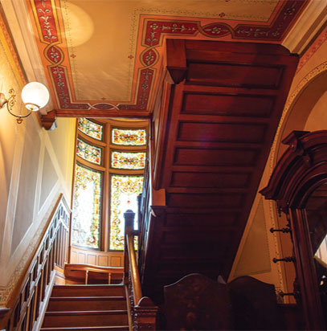
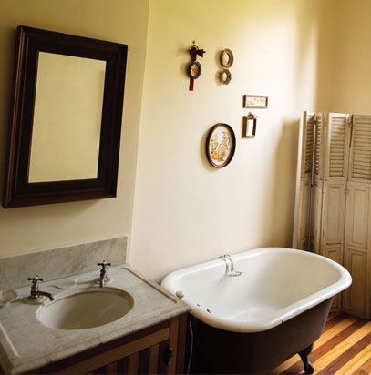
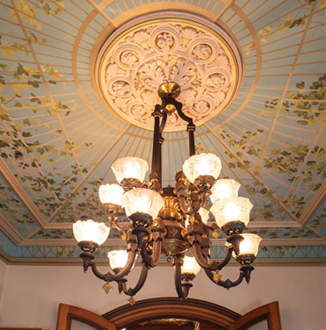

1875-1876 - Construction of the Homestead
In 1862, James Millikin bought the tract of land that includes the Homestead site. The original tract consists of 22 acres which Millikin purchased for $2,200. Though considered very expensive at the time, pieces of the tract were gradually sold, and Millikin regained his original investment many times over. He retained six acres for the Homestead.
Construction of the Millikin home began in July 1875, and continued into 1876. The home cost approximately $18,000 to build, but as Mr. Millikin was fond of reminiscing, "The best of carpenters could be had for $1.25 to $1.50 a day, and brick-layers were paid not over $2.00 a day." The working day was 10 hours long.
The home's exterior reflects the Italianate style, the roofs being the only exception. The roofs are Mansard style and are crested with wrought iron, common to the Second Empire style. The asymmetrical facade boasts a second-floor porch on the north side, and a one-story porch with pillars on the center and south sides.
Floor Plan
The floor plan of the Millikin home is very similar to Millikin's Pennsylvania birthplace. The first floor is bisected by a large central hall and includes two parlors, dining room, library, kitchen, and breakfast room. Ornate fireplaces are found in the first-floor rooms, and plaster reliefs decorate the ceilings.
The main rooms and staircase feature extensive walnut and butternut woodwork. The full-length window shutters are reproductions of the original window treatment.
The north parlor serves the Millikins as their "company parlor." It has been restored to imitate a typical Victorian parlor and is furnished with three pieces for the Millikin collection.
The south parlor was used by the Millikins as their "family parlor." Both parlors have beautifully painted ceiling frescoes, reproductions of the original design, and reproduction floral Administer carpeting typical of the period.
The sheer size of the grand hall makes it impressive. It is 11 feet wide and over 30 feet long. Originally, the staircase was located along the south wall of the hallway, which Mrs. Millikin felt made the hall both cold and dark.
The acid-etched camphor glass doors at the entrance of the dining room depict fruit and fowl. They are original to the home, as is the Eastlake dining room furniture.
The library was a favorite room for the Millikins because it was more intimate than the parlors, and its southwest exposure made it bright and cheery.
An art nouveau stained glass window decorates the bay on the north.
The most dramatic feature of the home is the large central staircase. A stained glass oriel window with a bench to seat ten beneath it is visible on the landing. On the ceiling above is a pink, gray, and blue mural of cherubs on canvas.
During the Millikins' time the second floor consists of seven rooms.
The full-length window shutters of the first floor are repeated in the bedrooms of the second floor. Two of the fireplaces are slate finished to simulate marble.
The northeast bedroom originally had giant hydrangeas painted on the ceiling and was known as the Snowball Room.
The glass in the transom above its entrance is dedicated to the Decatur Art Class, founded in 1880. Mrs. Millikin was one of the founders of the organization, and they often met in her home to study art, culture, and philosophy.
It is speculated that the southeast bedroom served as the master bedroom.
1883 Remodeling
In a major remodeling in 1883, a kitchen was added to the northwest corner of the house so that the former kitchen area behind the north parlor could be used for the new staircase. A fireplace was installed where the original stairs once stood.
Though the kitchen has been remodeled to be functional, the outward appearance is nineteenth-century. It features the original kitchen cabinets, maple floor, and antique light fixtures. Adjacent to the kitchen is the breakfast room, which was created during the 1883 remodeling.
At the time the Millikins constructed their home, an indoor bathroom did not exist in Decatur. It is believed that the bathrooms were installed in the 1883 remodeling. They were considered quite luxurious at that time.
James & Anna Millikin
James and Anna Millikin contributed much to this community when they were alive. They would be pleased to see the community and the University for which they cared so much working together to develop the James Millikin Homestead as a cultural activity center for the entire area.
The Millikins occupied the home for more than thirty years. They actively gave back to the local community. After James died in 1909, Anna stayed in the house. She supported the James Millikin University, founded in 1901 as well as the Decatur Art Class and the Municipal Art League. When Anna passed in 1913, her will left instructions as to the use of the Millikin Homestead. Her wish was that the home be used as an art gallery, institute, and museum. The will set instructions for the appointment of trustees to carry out the Millikins' wishes.
For six years, the home stood empty while the trustees tried to reach a consensus to implement the provisions set forth in Anna's will. The trustees had to make a great transition, as they were not accustomed to acting as patrons of the arts. For a short while, the Millikin Homestead was used as an auxiliary hospital during the great flu epidemic of 1918.
1942 - Millikin University Becomes Owner
Ownership of the Millikin Homestead was transferred in 1942 to the trustees of Millikin University. The Art Institute became the Decatur Art Center. The university supplied much-needed funding, and the faculty art director became permanent caretaker of the home. The Art Institute continued to add to Anna's collection of artwork, including paintings, watercolors, lithographs, and sculptures. Art classes and tours were offered, as well as special exhibits from time to time.
The university continued to maintain the home, and eventually altered the first floor considerably to make room for gallery exhibits. The mirrors above the mantels in both parlors, the dining room and the main hall were covered, and walls were constructed in front of the large bay window of the south parlor and the windows of the north parlor and dining room. Most of the original furniture was put into storage at the Anna B. Millikin Home for Women and Orphans.
1979 - The Homestead, Inc. Formed
The Homestead, Inc., is a not for profit corporation created in 1979. The mission of the Homstead, Inc., is to restore and preserve the interior of this irreplaceable Decatur landmark, thereby raising community awareness of our historical heritage and promoting preservation for the future generations.
The Homestead Inc. Board worked to see that no irreversible changes were made to the home. The house is structurally the same as the day of Anna Millikin's death. The false walls the Decatur Art Center constructed were removed, as were the coverings over the mantels. All woodwork on the walls and floors of the home was restored. The walls in the main hall were covered with period-appropriate wallpaper. Unfortunately, a fire at the Anna B. Millikin Home for Widows and Orphans destroyed much of the home's original furniture. A few original pieces of furniture were recovered and returned to the house. Furniture appropriate to the period was donated or loaned for use in the house. The stained glass window in the stairway was restored. The board also raised funds to restore the ceiling fresco in the dining room as well as the ceilings of the north and south parlors. The ceiling fresco in the master bedroom is on schedule for restoration next.